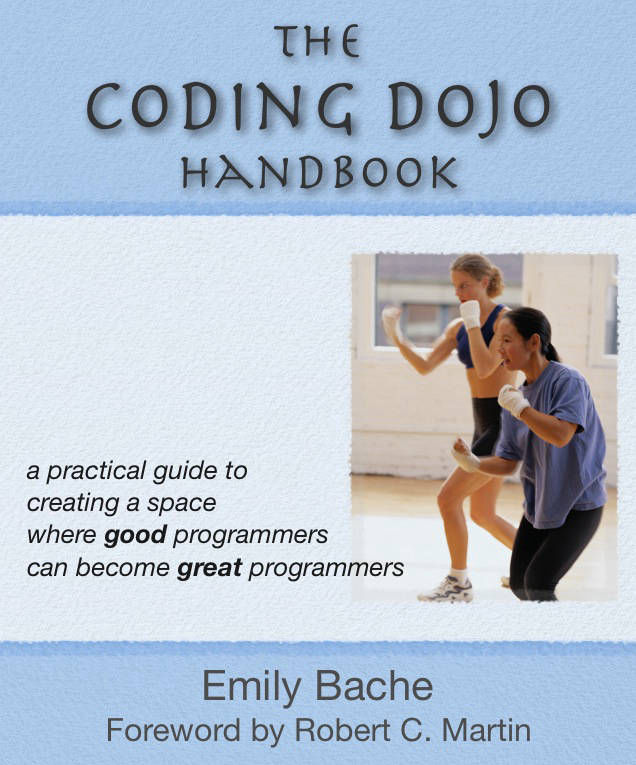

Working Effectively with Legacy Code, Michael C. Feathers
Clean Code, Robert C. Martin
Refactoring, Improving the Design of Existing Code, Martin Fowler
 Design Patterns, Elements of Reusable Object-Oriented Software, Erich Gamma, Richard Helm, Ralph Johnson, John Vlissides
Design Patterns, Elements of Reusable Object-Oriented Software, Erich Gamma, Richard Helm, Ralph Johnson, John VlissidesClean Architecture, Robert C. Martin
Domain-Driven Design, Tackling Complexity in the Heart of Software, Eric Evans
Test-Driven Development By Example, Kent Beck
The Coding Dojo Handbook, Emily Bache
Your Code as a Crime Scene, Adam Tornhill